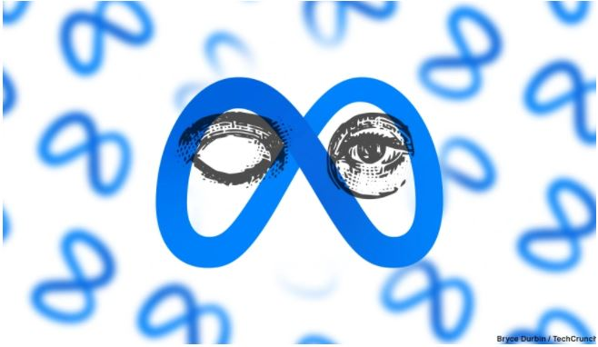

Join TechCrunch+
Login
Startups
TechCrunch+
Audio
Newslatters
Videos
Advertise
Events
More
Meta's Oversight Board urges Facebook and Instgram to tighten doxing rules
Taylor Hatmaker

To cope with stricter data regulation, enterprises should look to fully open APIs
Jean-Paul Smets
To cope with stricter data regulation, enterprises should look to fully open APIs
Jean-Paul Smets
To cope with stricter data regulation, enterprises should look to fully open APIs
Jean-Paul Smets
To cope with stricter data regulation, enterprises should look to fully open APIs
Jean-Paul Smets